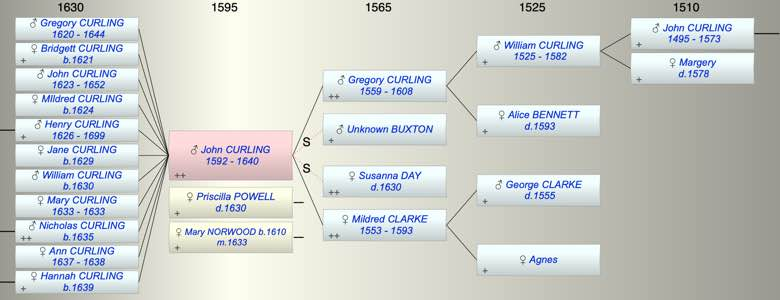

| [Index] |
| John CURLING (1592 - 1640) |
|  |
| b. 1592 at Minster |
| m. (1) Priscilla POWELL ( - 1630) |
| m. (2) 03 Oct 1633 Mary NORWOOD (1610 - ) at St Peters, Thanet |
| d. 1640 aged 48 |
| Parents: |
| Gregory CURLING (1559 - 1608) |
| Mildred CLARKE (1553 - 1593) |
| Siblings (7): |
| WIlliam CURLING (1587 - ) |
| Alice CURLING (1589 - ) |
| Ann CURLING (1590 - ) |
| Dorothy SAUNDER (1584 - ) |
| Suzanna SAUNDER (1585 - ) |
| Bartholomew SAUNDER (1587 - ) |
| Margaret SAUNDER (1589 - ) |
| Grandchildren (11): |
| Henry CURLING (1660 - ), Thomas CURLING (1662 - ), Elizabeth CURLING (1661 - ), John CURLING (1665 - 1744), Sarah CURLING (1666 - ), Robert CURLING (1668 - ), Anne CURLING (1669 - ), Mary CURLING (1672 - ), George BOYMAN (1659 - ), Mary BOYMAN (1664 - ), Richard BOYMAN (1676 - ) |
| Events in John CURLING (1592 - 1640)'s life | |||||
| Date | Age | Event | Place | Notes | Src |
| Married Priscilla POWELL | not found but before 1619 | ||||
| 1592 | John CURLING was born | Minster | bap MInster 15 Oct 1592 | ||
| 1593 | 1 | Death of mother Mildred CLARKE (aged 40) | St Laurence | buried 5 Aug 1593 St Laurence | |
| 1608 | 16 | Death of father Gregory CURLING (aged 49) | St Laurence | buried 31 May 1608 ex FMP PR | |
| 1620 | 28 | Birth of son Gregory CURLING | Fordwich, Kent | Note 1 | |
| 1621 | 29 | Birth of daughter Bridgett CURLING | Fordwich, Kent | Note 2 | |
| 1623 | 31 | Birth of son John CURLING | Fordwich, Kent | Note 3 | |
| 1624 | 32 | Birth of daughter MIldred CURLING | Note 4 | ||
| 1626 | 34 | Birth of son Henry CURLING | St Laurence | Note 5 | |
| 1629 | 37 | Birth of daughter Jane CURLING | St Laurence | Note 6 | |
| 1630 | 38 | Birth of son William CURLING | St Laurence | Note 7 | |
| 1630 | 38 | Death of step mother Susanna DAY | |||
| 1630 | 38 | Death of wife Priscilla POWELL | Note 8 | ||
| 1633 | 41 | Birth of daughter Mary CURLING | St Peter, Thanet | Note 9 | |
| 1633 | 41 | Death of daughter Mary CURLING | St Peter, Thanet | Note 10 | |
| 03 Oct 1633 | 41 | Married Mary NORWOOD (aged 23) | St Peters, Thanet | Note 11 | |
| 1635 | 43 | Birth of son Nicholas CURLING | St Peters | Note 12 | |
| 1637 | 45 | Birth of daughter Ann CURLING | Thanet | Note 13 | |
| 1638 | 46 | Death of daughter Ann CURLING (aged 1) | Thanet | buried St Johns 3 Jul 1636 | |
| 1639 | 47 | Birth of daughter Hannah CURLING | Note 14 | ||
| 1640 | 48 | John CURLING died | Note 15 | ||
| Personal Notes: |
|
John b 1592. We think he was John of Fordwich referred to by Cotton.
Given that John did not inherit Chilton but was described later as gentleman it seems much more likely that it was he who was granted a pass issued from the Privy Council in the year 1614, giving authority to go to France to learn the language, but not to go to Rome, rather than John who married Elizabeth Wood. He would have been 22 years old in 1614. John died in 1640. Buried 2 Jan 1641 St L confirmed FMP PR. Will summary PRC 3/36a/13 ?? PROB 11/186 ex The Genealogist Date of will making unkown, proved 15 July 1640 • John Curlinge of parish of St John the Baptist, Isle of Thanet • to Daughters Bridgett and Jane an annuity of £8 each yearly • to son Henry leases held from ?? St John?? Hospital • to son William an annuity of £10 • to son Nicholas an annuity of £8 to be held by John’s wife to bring Nicholas up until he reaches 15 • to wife, immediately on his death, his bed, bedsheet {cover?], 3 pairs sheets and pillow boulster and £10 within 5 weeks of his decease • surplus to be divided between sons Gregory and John [time stipulation unintelligible], John to lease half with brother Gregorie and to have an annuity of £20 • to son Gregorie all lands No named witnesses So he had daughters Bridgett, Mildred and Jane and sons Henry, William, Nicholas, Gregory and John. His wife (not named) was alive when he wrote his will. There are baptisms that fit with John’s will and his marriages : John 13 Apr 1623 Fordwich ex FamilySearch Mildred 19 Jun 1624 St Alphege Canterbury ex FMP PR Henry 21 Mar 1626 St L page 63 Jane 21 Mar 1629 St L page 65 (1628/29) William 15 Jan 1630 St L confirmed in Register Mary 26 May 1633 St P Register is definitely Mildred page 510 but there is also Mary 24 Feb 1633 page 510 Nicholas 5 Jul 1635 St P page 512 and gives Mary as mother Mary Norwood ? LucyAnn has found Fordwich records on microfilm (LDS) and discovered a bill or coppie of the register booke of the pishe of ffordwiche of all the Christenings Marriages & Burials from the 29th day of September anno 1619 untill the 29th of September 1620. The 27th day of January was baptised Gregory Curling sonne of John Courling gent The xiij of November [1621] was baptised Bridgett Curling daughter of John Curling 30/9/1622-410-1623: The xiij Aprille was baptised John Curling sonne of John Curling John of Fordwich was probably only at Fordwich between 1619 and 1623. There is nothing in any of the records before of after these dates about any Curlings. He may be the subject of two poems in Claraphil and Clarinda in a Forest of fancies by Thomas Jordan published 1650 A New-years Gift in the ordinary Acrostich to his Friend Mr. John Curling J f I were one of those that lately sold C onscience and Country for a Gripe of Gold, O r had I now a power to surprize U npittied England with a worse Excise H appily I might lend ye from my store R esplendent Jewels, or the Indian Oar, N ow I can send ye nought but empty Dishes, L ove, larded ore with Language & good wishes. I ehova grant that upon Sea and Land, N othing prove profitless you take in hand: G o forth and prosper, May your Labours end May all the Good you can attempt, prevail, Fate finde you fraught, & fair Winds fill your Sail. A Farewell to his worthy Friend, Mr John Curling upon his Voyage to the Indies. If I were more enamor’d with thy sight Than with thy safety, I should much invite Thy stay in England, and dissuade thee from Those motives which divert thy feet from home, But since I see the sullen Wars increase, And sad Destruction mortifie our Peace, I do applaud thy Providence, and pray That thy Negotiations Night and Day May prove propitious thou I hope, wilt finde, Though amongst Heathen, Spirits more inclin’d Unto Humanity, than some that here Usurp the name of Christians, May the cleer Beams of divine Protection ever dwell In all the Good you can attempt, Farewell. |
| Created on a Mac™ using iFamily for Mac™ on 8 Oct 2023 |